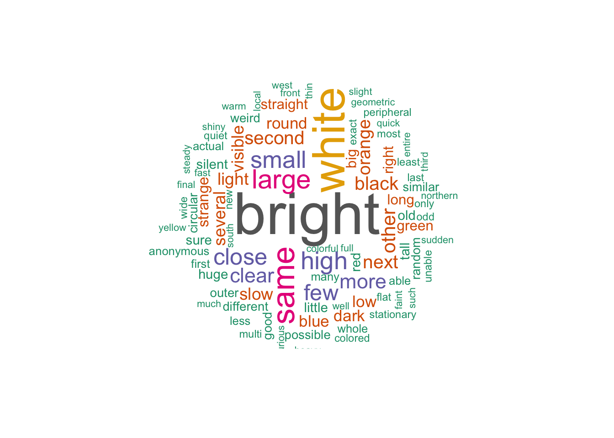
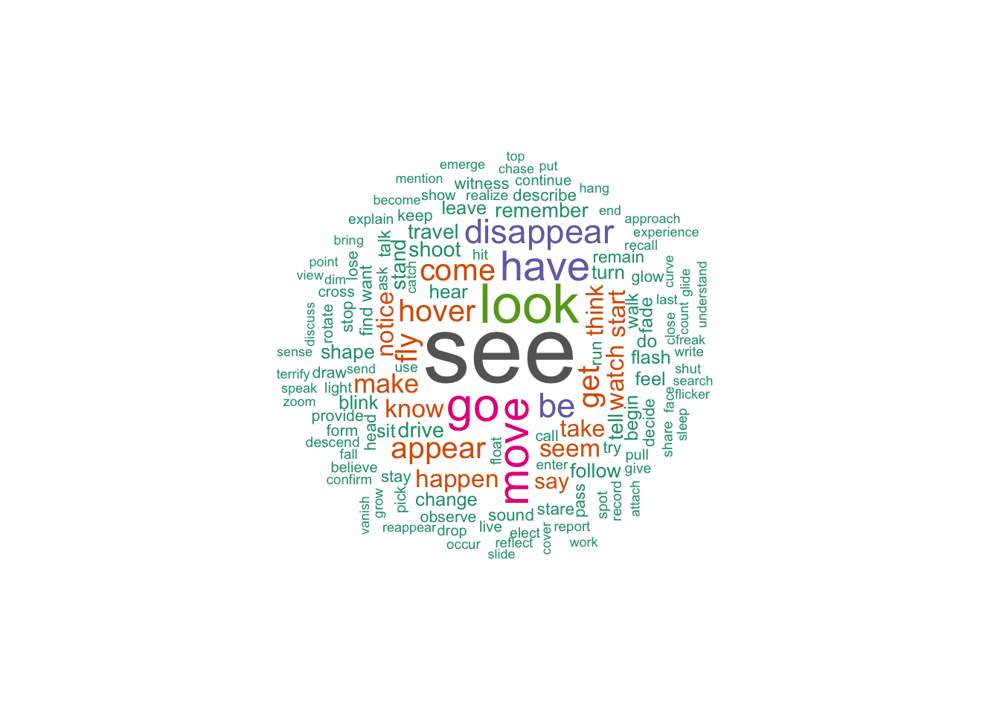

Text Analysis
library(tidyverse)
library(readr)
library(tidytext)
library(stringr)
library(purrr)
library(quanteda)## Warning in .recacheSubclasses(def@className, def, env): undefined subclass
## "pcorMatrix" of class "replValueSp"; definition not updated## Warning in .recacheSubclasses(def@className, def, env): undefined subclass
## "pcorMatrix" of class "xMatrix"; definition not updated## Warning in .recacheSubclasses(def@className, def, env): undefined subclass
## "pcorMatrix" of class "mMatrix"; definition not updatedlibrary(leaflet)
library(wordcloud)
library(RColorBrewer)
library(wordcloud2)
# Guide to set up Spacyr
# See full guide: https://cran.r-project.org/web/packages/spacyr/readme/README.html
# ---------------------------------
# Note: SpacyR is a wrapper to Python package Spacy.
# 0. Download Python
# 1. Download Spacy in Python: https://spacy.io/usage
# 2. Download Spacy in R: In CRAN console, use install.packages("spacyr")
# 3. In terminal, use the command to download language model through Python or Python3:
# a. python -m spacy download en
# b. python3 -m spacy download en
library(spacyr)clean_string = function(string){
# Detect and replace ','(comma) and `.`(period) from the string
new_str = gsub(",", ",", string)
new_str = gsub(".", ".", new_str)
new_str = gsub("&#[0-9]+|"|\\(|\\)"," ", new_str)
return(new_str)
}
df_ufo = read.csv("data/ufo_clean.csv") |>
janitor::clean_names() |>
drop_na(text, shape, duration_clean) |>
filter(text != '', length(c) > 0)
txt = c("i saw a large fireball falling to earth in the early morning hours on Oct.11񫺓 in Kentucky",
"My older brother and twin sister were leaving the only Edna theater at about 9 PM,...we had our bikes and I took a different route home",
"1949 Lackland AFB, TX. Lights racing across the sky & making 90 degree turns on a dime.")
# process documents and obtain a data.table
cleaned_df = df_ufo |>
head(100) |>
pull(text) |>
map(clean_string) |>
data_frame() |>
rename(text = 1)## Warning: `data_frame()` was deprecated in tibble 1.1.0.
## ℹ Please use `tibble()` instead.
## This warning is displayed once every 8 hours.
## Call `lifecycle::last_lifecycle_warnings()` to see where this warning was
## generated.More ideas: Words used by older generation vs newer generation (2000s vs 2010s vs 2020s) Duration vs colors Duration vs the usuage of “bright”
library(tictoc)
library(foreach)##
## Attaching package: 'foreach'## The following objects are masked from 'package:purrr':
##
## accumulate, whenlibrary(iterators)result = 0
for(i in 1:100){
tic("Parse Text - map")
spacy_initialize(model = "en_core_web_sm")
text_df = cleaned_df |>
mutate(
parsedtxt = map(text, spacy_parse)
) |>
unnest(parsedtxt) |>
mutate(
lemma = map(lemma, \(txt) str_extract(txt, "[:alpha:]+")) |>
tolower()
)
spacy_finalize()
toc()
k = toc()
result = result + k$toc - k$tic
}## Finding a python executable with spaCy installed...## spaCy (language model: en_core_web_sm) is installed in more than one python## spacyr will use /Library/Frameworks/Python.framework/Versions/3.12/bin/python3 (because ask = FALSE)## successfully initialized (spaCy Version: 3.7.2, language model: en_core_web_sm)## (python options: type = "python_executable", value = "/Library/Frameworks/Python.framework/Versions/3.12/bin/python3")## Parse Text - map: 7.452 sec elapsed## Python space is already attached. If you want to switch to a different Python, please restart R.## successfully initialized (spaCy Version: 3.7.2, language model: en_core_web_sm)## (python options: type = "python_executable", value = "/Library/Frameworks/Python.framework/Versions/3.12/bin/python3")## Parse Text - map: 4.609 sec elapsed## Python space is already attached. If you want to switch to a different Python, please restart R.## successfully initialized (spaCy Version: 3.7.2, language model: en_core_web_sm)## (python options: type = "python_executable", value = "/Library/Frameworks/Python.framework/Versions/3.12/bin/python3")## Parse Text - map: 4.642 sec elapsed## Python space is already attached. If you want to switch to a different Python, please restart R.## successfully initialized (spaCy Version: 3.7.2, language model: en_core_web_sm)## (python options: type = "python_executable", value = "/Library/Frameworks/Python.framework/Versions/3.12/bin/python3")## Parse Text - map: 4.586 sec elapsed## Python space is already attached. If you want to switch to a different Python, please restart R.## successfully initialized (spaCy Version: 3.7.2, language model: en_core_web_sm)## (python options: type = "python_executable", value = "/Library/Frameworks/Python.framework/Versions/3.12/bin/python3")## Parse Text - map: 4.56 sec elapsed## Python space is already attached. If you want to switch to a different Python, please restart R.## successfully initialized (spaCy Version: 3.7.2, language model: en_core_web_sm)## (python options: type = "python_executable", value = "/Library/Frameworks/Python.framework/Versions/3.12/bin/python3")## Parse Text - map: 4.694 sec elapsed## Python space is already attached. If you want to switch to a different Python, please restart R.## successfully initialized (spaCy Version: 3.7.2, language model: en_core_web_sm)## (python options: type = "python_executable", value = "/Library/Frameworks/Python.framework/Versions/3.12/bin/python3")## Parse Text - map: 4.517 sec elapsed## Python space is already attached. If you want to switch to a different Python, please restart R.## successfully initialized (spaCy Version: 3.7.2, language model: en_core_web_sm)## (python options: type = "python_executable", value = "/Library/Frameworks/Python.framework/Versions/3.12/bin/python3")## Parse Text - map: 4.689 sec elapsed## Python space is already attached. If you want to switch to a different Python, please restart R.## successfully initialized (spaCy Version: 3.7.2, language model: en_core_web_sm)## (python options: type = "python_executable", value = "/Library/Frameworks/Python.framework/Versions/3.12/bin/python3")## Parse Text - map: 4.712 sec elapsed## Python space is already attached. If you want to switch to a different Python, please restart R.## successfully initialized (spaCy Version: 3.7.2, language model: en_core_web_sm)## (python options: type = "python_executable", value = "/Library/Frameworks/Python.framework/Versions/3.12/bin/python3")## Parse Text - map: 4.72 sec elapsed## Python space is already attached. If you want to switch to a different Python, please restart R.## successfully initialized (spaCy Version: 3.7.2, language model: en_core_web_sm)## (python options: type = "python_executable", value = "/Library/Frameworks/Python.framework/Versions/3.12/bin/python3")## Parse Text - map: 4.917 sec elapsed## Python space is already attached. If you want to switch to a different Python, please restart R.## successfully initialized (spaCy Version: 3.7.2, language model: en_core_web_sm)## (python options: type = "python_executable", value = "/Library/Frameworks/Python.framework/Versions/3.12/bin/python3")## Parse Text - map: 4.819 sec elapsed## Python space is already attached. If you want to switch to a different Python, please restart R.## successfully initialized (spaCy Version: 3.7.2, language model: en_core_web_sm)## (python options: type = "python_executable", value = "/Library/Frameworks/Python.framework/Versions/3.12/bin/python3")## Parse Text - map: 4.791 sec elapsed## Python space is already attached. If you want to switch to a different Python, please restart R.## successfully initialized (spaCy Version: 3.7.2, language model: en_core_web_sm)## (python options: type = "python_executable", value = "/Library/Frameworks/Python.framework/Versions/3.12/bin/python3")## Parse Text - map: 4.621 sec elapsed## Python space is already attached. If you want to switch to a different Python, please restart R.## successfully initialized (spaCy Version: 3.7.2, language model: en_core_web_sm)## (python options: type = "python_executable", value = "/Library/Frameworks/Python.framework/Versions/3.12/bin/python3")## Parse Text - map: 4.616 sec elapsed## Python space is already attached. If you want to switch to a different Python, please restart R.## successfully initialized (spaCy Version: 3.7.2, language model: en_core_web_sm)## (python options: type = "python_executable", value = "/Library/Frameworks/Python.framework/Versions/3.12/bin/python3")## Parse Text - map: 4.645 sec elapsed## Python space is already attached. If you want to switch to a different Python, please restart R.## successfully initialized (spaCy Version: 3.7.2, language model: en_core_web_sm)## (python options: type = "python_executable", value = "/Library/Frameworks/Python.framework/Versions/3.12/bin/python3")## Parse Text - map: 4.648 sec elapsed## Python space is already attached. If you want to switch to a different Python, please restart R.## successfully initialized (spaCy Version: 3.7.2, language model: en_core_web_sm)## (python options: type = "python_executable", value = "/Library/Frameworks/Python.framework/Versions/3.12/bin/python3")## Parse Text - map: 4.715 sec elapsed## Python space is already attached. If you want to switch to a different Python, please restart R.## successfully initialized (spaCy Version: 3.7.2, language model: en_core_web_sm)## (python options: type = "python_executable", value = "/Library/Frameworks/Python.framework/Versions/3.12/bin/python3")## Parse Text - map: 4.657 sec elapsed## Python space is already attached. If you want to switch to a different Python, please restart R.## successfully initialized (spaCy Version: 3.7.2, language model: en_core_web_sm)## (python options: type = "python_executable", value = "/Library/Frameworks/Python.framework/Versions/3.12/bin/python3")## Parse Text - map: 4.657 sec elapsed## Python space is already attached. If you want to switch to a different Python, please restart R.## successfully initialized (spaCy Version: 3.7.2, language model: en_core_web_sm)## (python options: type = "python_executable", value = "/Library/Frameworks/Python.framework/Versions/3.12/bin/python3")## Parse Text - map: 4.654 sec elapsed## Python space is already attached. If you want to switch to a different Python, please restart R.## successfully initialized (spaCy Version: 3.7.2, language model: en_core_web_sm)## (python options: type = "python_executable", value = "/Library/Frameworks/Python.framework/Versions/3.12/bin/python3")## Parse Text - map: 4.654 sec elapsed## Python space is already attached. If you want to switch to a different Python, please restart R.## successfully initialized (spaCy Version: 3.7.2, language model: en_core_web_sm)## (python options: type = "python_executable", value = "/Library/Frameworks/Python.framework/Versions/3.12/bin/python3")## Parse Text - map: 4.603 sec elapsed## Python space is already attached. If you want to switch to a different Python, please restart R.## successfully initialized (spaCy Version: 3.7.2, language model: en_core_web_sm)## (python options: type = "python_executable", value = "/Library/Frameworks/Python.framework/Versions/3.12/bin/python3")## Parse Text - map: 4.639 sec elapsed## Python space is already attached. If you want to switch to a different Python, please restart R.## successfully initialized (spaCy Version: 3.7.2, language model: en_core_web_sm)## (python options: type = "python_executable", value = "/Library/Frameworks/Python.framework/Versions/3.12/bin/python3")## Parse Text - map: 4.643 sec elapsed## Python space is already attached. If you want to switch to a different Python, please restart R.## successfully initialized (spaCy Version: 3.7.2, language model: en_core_web_sm)## (python options: type = "python_executable", value = "/Library/Frameworks/Python.framework/Versions/3.12/bin/python3")## Parse Text - map: 4.593 sec elapsed## Python space is already attached. If you want to switch to a different Python, please restart R.## successfully initialized (spaCy Version: 3.7.2, language model: en_core_web_sm)## (python options: type = "python_executable", value = "/Library/Frameworks/Python.framework/Versions/3.12/bin/python3")## Parse Text - map: 4.602 sec elapsed## Python space is already attached. If you want to switch to a different Python, please restart R.## successfully initialized (spaCy Version: 3.7.2, language model: en_core_web_sm)## (python options: type = "python_executable", value = "/Library/Frameworks/Python.framework/Versions/3.12/bin/python3")## Parse Text - map: 4.581 sec elapsed## Python space is already attached. If you want to switch to a different Python, please restart R.## successfully initialized (spaCy Version: 3.7.2, language model: en_core_web_sm)## (python options: type = "python_executable", value = "/Library/Frameworks/Python.framework/Versions/3.12/bin/python3")## Parse Text - map: 4.544 sec elapsed## Python space is already attached. If you want to switch to a different Python, please restart R.## successfully initialized (spaCy Version: 3.7.2, language model: en_core_web_sm)## (python options: type = "python_executable", value = "/Library/Frameworks/Python.framework/Versions/3.12/bin/python3")## Parse Text - map: 4.584 sec elapsed## Python space is already attached. If you want to switch to a different Python, please restart R.## successfully initialized (spaCy Version: 3.7.2, language model: en_core_web_sm)## (python options: type = "python_executable", value = "/Library/Frameworks/Python.framework/Versions/3.12/bin/python3")## Parse Text - map: 4.591 sec elapsed## Python space is already attached. If you want to switch to a different Python, please restart R.## successfully initialized (spaCy Version: 3.7.2, language model: en_core_web_sm)## (python options: type = "python_executable", value = "/Library/Frameworks/Python.framework/Versions/3.12/bin/python3")## Parse Text - map: 4.572 sec elapsed## Python space is already attached. If you want to switch to a different Python, please restart R.## successfully initialized (spaCy Version: 3.7.2, language model: en_core_web_sm)## (python options: type = "python_executable", value = "/Library/Frameworks/Python.framework/Versions/3.12/bin/python3")## Parse Text - map: 4.603 sec elapsed## Python space is already attached. If you want to switch to a different Python, please restart R.## successfully initialized (spaCy Version: 3.7.2, language model: en_core_web_sm)## (python options: type = "python_executable", value = "/Library/Frameworks/Python.framework/Versions/3.12/bin/python3")## Parse Text - map: 4.582 sec elapsed## Python space is already attached. If you want to switch to a different Python, please restart R.## successfully initialized (spaCy Version: 3.7.2, language model: en_core_web_sm)## (python options: type = "python_executable", value = "/Library/Frameworks/Python.framework/Versions/3.12/bin/python3")## Parse Text - map: 4.617 sec elapsed## Python space is already attached. If you want to switch to a different Python, please restart R.## successfully initialized (spaCy Version: 3.7.2, language model: en_core_web_sm)## (python options: type = "python_executable", value = "/Library/Frameworks/Python.framework/Versions/3.12/bin/python3")## Parse Text - map: 4.875 sec elapsed## Python space is already attached. If you want to switch to a different Python, please restart R.## successfully initialized (spaCy Version: 3.7.2, language model: en_core_web_sm)## (python options: type = "python_executable", value = "/Library/Frameworks/Python.framework/Versions/3.12/bin/python3")## Parse Text - map: 4.813 sec elapsed## Python space is already attached. If you want to switch to a different Python, please restart R.## successfully initialized (spaCy Version: 3.7.2, language model: en_core_web_sm)## (python options: type = "python_executable", value = "/Library/Frameworks/Python.framework/Versions/3.12/bin/python3")## Parse Text - map: 4.851 sec elapsed## Python space is already attached. If you want to switch to a different Python, please restart R.## successfully initialized (spaCy Version: 3.7.2, language model: en_core_web_sm)## (python options: type = "python_executable", value = "/Library/Frameworks/Python.framework/Versions/3.12/bin/python3")## Parse Text - map: 4.868 sec elapsed## Python space is already attached. If you want to switch to a different Python, please restart R.## successfully initialized (spaCy Version: 3.7.2, language model: en_core_web_sm)## (python options: type = "python_executable", value = "/Library/Frameworks/Python.framework/Versions/3.12/bin/python3")## Parse Text - map: 4.77 sec elapsed## Python space is already attached. If you want to switch to a different Python, please restart R.## successfully initialized (spaCy Version: 3.7.2, language model: en_core_web_sm)## (python options: type = "python_executable", value = "/Library/Frameworks/Python.framework/Versions/3.12/bin/python3")## Parse Text - map: 4.6 sec elapsed## Python space is already attached. If you want to switch to a different Python, please restart R.## successfully initialized (spaCy Version: 3.7.2, language model: en_core_web_sm)## (python options: type = "python_executable", value = "/Library/Frameworks/Python.framework/Versions/3.12/bin/python3")## Parse Text - map: 4.748 sec elapsed## Python space is already attached. If you want to switch to a different Python, please restart R.## successfully initialized (spaCy Version: 3.7.2, language model: en_core_web_sm)## (python options: type = "python_executable", value = "/Library/Frameworks/Python.framework/Versions/3.12/bin/python3")## Parse Text - map: 4.874 sec elapsed## Python space is already attached. If you want to switch to a different Python, please restart R.## successfully initialized (spaCy Version: 3.7.2, language model: en_core_web_sm)## (python options: type = "python_executable", value = "/Library/Frameworks/Python.framework/Versions/3.12/bin/python3")## Parse Text - map: 4.81 sec elapsed## Python space is already attached. If you want to switch to a different Python, please restart R.## successfully initialized (spaCy Version: 3.7.2, language model: en_core_web_sm)## (python options: type = "python_executable", value = "/Library/Frameworks/Python.framework/Versions/3.12/bin/python3")## Parse Text - map: 4.642 sec elapsed## Python space is already attached. If you want to switch to a different Python, please restart R.## successfully initialized (spaCy Version: 3.7.2, language model: en_core_web_sm)## (python options: type = "python_executable", value = "/Library/Frameworks/Python.framework/Versions/3.12/bin/python3")## Parse Text - map: 4.665 sec elapsed## Python space is already attached. If you want to switch to a different Python, please restart R.## successfully initialized (spaCy Version: 3.7.2, language model: en_core_web_sm)## (python options: type = "python_executable", value = "/Library/Frameworks/Python.framework/Versions/3.12/bin/python3")## Parse Text - map: 4.706 sec elapsed## Python space is already attached. If you want to switch to a different Python, please restart R.## successfully initialized (spaCy Version: 3.7.2, language model: en_core_web_sm)## (python options: type = "python_executable", value = "/Library/Frameworks/Python.framework/Versions/3.12/bin/python3")## Parse Text - map: 4.631 sec elapsed## Python space is already attached. If you want to switch to a different Python, please restart R.## successfully initialized (spaCy Version: 3.7.2, language model: en_core_web_sm)## (python options: type = "python_executable", value = "/Library/Frameworks/Python.framework/Versions/3.12/bin/python3")## Parse Text - map: 4.592 sec elapsed## Python space is already attached. If you want to switch to a different Python, please restart R.## successfully initialized (spaCy Version: 3.7.2, language model: en_core_web_sm)## (python options: type = "python_executable", value = "/Library/Frameworks/Python.framework/Versions/3.12/bin/python3")## Parse Text - map: 4.669 sec elapsed## Python space is already attached. If you want to switch to a different Python, please restart R.## successfully initialized (spaCy Version: 3.7.2, language model: en_core_web_sm)## (python options: type = "python_executable", value = "/Library/Frameworks/Python.framework/Versions/3.12/bin/python3")## Parse Text - map: 4.727 sec elapsed## Python space is already attached. If you want to switch to a different Python, please restart R.## successfully initialized (spaCy Version: 3.7.2, language model: en_core_web_sm)## (python options: type = "python_executable", value = "/Library/Frameworks/Python.framework/Versions/3.12/bin/python3")## Parse Text - map: 4.775 sec elapsed## Python space is already attached. If you want to switch to a different Python, please restart R.## successfully initialized (spaCy Version: 3.7.2, language model: en_core_web_sm)## (python options: type = "python_executable", value = "/Library/Frameworks/Python.framework/Versions/3.12/bin/python3")## Parse Text - map: 4.531 sec elapsed## Python space is already attached. If you want to switch to a different Python, please restart R.## successfully initialized (spaCy Version: 3.7.2, language model: en_core_web_sm)## (python options: type = "python_executable", value = "/Library/Frameworks/Python.framework/Versions/3.12/bin/python3")## Parse Text - map: 4.619 sec elapsed## Python space is already attached. If you want to switch to a different Python, please restart R.## successfully initialized (spaCy Version: 3.7.2, language model: en_core_web_sm)## (python options: type = "python_executable", value = "/Library/Frameworks/Python.framework/Versions/3.12/bin/python3")## Parse Text - map: 4.568 sec elapsed## Python space is already attached. If you want to switch to a different Python, please restart R.## successfully initialized (spaCy Version: 3.7.2, language model: en_core_web_sm)## (python options: type = "python_executable", value = "/Library/Frameworks/Python.framework/Versions/3.12/bin/python3")## Parse Text - map: 4.692 sec elapsed## Python space is already attached. If you want to switch to a different Python, please restart R.## successfully initialized (spaCy Version: 3.7.2, language model: en_core_web_sm)## (python options: type = "python_executable", value = "/Library/Frameworks/Python.framework/Versions/3.12/bin/python3")## Parse Text - map: 4.722 sec elapsed## Python space is already attached. If you want to switch to a different Python, please restart R.## successfully initialized (spaCy Version: 3.7.2, language model: en_core_web_sm)## (python options: type = "python_executable", value = "/Library/Frameworks/Python.framework/Versions/3.12/bin/python3")## Parse Text - map: 4.795 sec elapsed## Python space is already attached. If you want to switch to a different Python, please restart R.## successfully initialized (spaCy Version: 3.7.2, language model: en_core_web_sm)## (python options: type = "python_executable", value = "/Library/Frameworks/Python.framework/Versions/3.12/bin/python3")## Parse Text - map: 4.773 sec elapsed## Python space is already attached. If you want to switch to a different Python, please restart R.## successfully initialized (spaCy Version: 3.7.2, language model: en_core_web_sm)## (python options: type = "python_executable", value = "/Library/Frameworks/Python.framework/Versions/3.12/bin/python3")## Parse Text - map: 4.795 sec elapsed## Python space is already attached. If you want to switch to a different Python, please restart R.## successfully initialized (spaCy Version: 3.7.2, language model: en_core_web_sm)## (python options: type = "python_executable", value = "/Library/Frameworks/Python.framework/Versions/3.12/bin/python3")## Parse Text - map: 4.897 sec elapsed## Python space is already attached. If you want to switch to a different Python, please restart R.## successfully initialized (spaCy Version: 3.7.2, language model: en_core_web_sm)## (python options: type = "python_executable", value = "/Library/Frameworks/Python.framework/Versions/3.12/bin/python3")## Parse Text - map: 4.877 sec elapsed## Python space is already attached. If you want to switch to a different Python, please restart R.## successfully initialized (spaCy Version: 3.7.2, language model: en_core_web_sm)## (python options: type = "python_executable", value = "/Library/Frameworks/Python.framework/Versions/3.12/bin/python3")## Parse Text - map: 4.668 sec elapsed## Python space is already attached. If you want to switch to a different Python, please restart R.## successfully initialized (spaCy Version: 3.7.2, language model: en_core_web_sm)## (python options: type = "python_executable", value = "/Library/Frameworks/Python.framework/Versions/3.12/bin/python3")## Parse Text - map: 4.69 sec elapsed## Python space is already attached. If you want to switch to a different Python, please restart R.## successfully initialized (spaCy Version: 3.7.2, language model: en_core_web_sm)## (python options: type = "python_executable", value = "/Library/Frameworks/Python.framework/Versions/3.12/bin/python3")## Parse Text - map: 4.782 sec elapsed## Python space is already attached. If you want to switch to a different Python, please restart R.## successfully initialized (spaCy Version: 3.7.2, language model: en_core_web_sm)## (python options: type = "python_executable", value = "/Library/Frameworks/Python.framework/Versions/3.12/bin/python3")## Parse Text - map: 4.671 sec elapsed## Python space is already attached. If you want to switch to a different Python, please restart R.## successfully initialized (spaCy Version: 3.7.2, language model: en_core_web_sm)## (python options: type = "python_executable", value = "/Library/Frameworks/Python.framework/Versions/3.12/bin/python3")## Parse Text - map: 4.832 sec elapsed## Python space is already attached. If you want to switch to a different Python, please restart R.## successfully initialized (spaCy Version: 3.7.2, language model: en_core_web_sm)## (python options: type = "python_executable", value = "/Library/Frameworks/Python.framework/Versions/3.12/bin/python3")## Parse Text - map: 4.846 sec elapsed## Python space is already attached. If you want to switch to a different Python, please restart R.## successfully initialized (spaCy Version: 3.7.2, language model: en_core_web_sm)## (python options: type = "python_executable", value = "/Library/Frameworks/Python.framework/Versions/3.12/bin/python3")## Parse Text - map: 4.746 sec elapsed## Python space is already attached. If you want to switch to a different Python, please restart R.## successfully initialized (spaCy Version: 3.7.2, language model: en_core_web_sm)## (python options: type = "python_executable", value = "/Library/Frameworks/Python.framework/Versions/3.12/bin/python3")## Parse Text - map: 4.665 sec elapsed## Python space is already attached. If you want to switch to a different Python, please restart R.## successfully initialized (spaCy Version: 3.7.2, language model: en_core_web_sm)## (python options: type = "python_executable", value = "/Library/Frameworks/Python.framework/Versions/3.12/bin/python3")## Parse Text - map: 4.678 sec elapsed## Python space is already attached. If you want to switch to a different Python, please restart R.## successfully initialized (spaCy Version: 3.7.2, language model: en_core_web_sm)## (python options: type = "python_executable", value = "/Library/Frameworks/Python.framework/Versions/3.12/bin/python3")## Parse Text - map: 4.746 sec elapsed## Python space is already attached. If you want to switch to a different Python, please restart R.## successfully initialized (spaCy Version: 3.7.2, language model: en_core_web_sm)## (python options: type = "python_executable", value = "/Library/Frameworks/Python.framework/Versions/3.12/bin/python3")## Parse Text - map: 4.644 sec elapsed## Python space is already attached. If you want to switch to a different Python, please restart R.## successfully initialized (spaCy Version: 3.7.2, language model: en_core_web_sm)## (python options: type = "python_executable", value = "/Library/Frameworks/Python.framework/Versions/3.12/bin/python3")## Parse Text - map: 4.806 sec elapsed## Python space is already attached. If you want to switch to a different Python, please restart R.## successfully initialized (spaCy Version: 3.7.2, language model: en_core_web_sm)## (python options: type = "python_executable", value = "/Library/Frameworks/Python.framework/Versions/3.12/bin/python3")## Parse Text - map: 4.788 sec elapsed## Python space is already attached. If you want to switch to a different Python, please restart R.## successfully initialized (spaCy Version: 3.7.2, language model: en_core_web_sm)## (python options: type = "python_executable", value = "/Library/Frameworks/Python.framework/Versions/3.12/bin/python3")## Parse Text - map: 4.653 sec elapsed## Python space is already attached. If you want to switch to a different Python, please restart R.## successfully initialized (spaCy Version: 3.7.2, language model: en_core_web_sm)## (python options: type = "python_executable", value = "/Library/Frameworks/Python.framework/Versions/3.12/bin/python3")## Parse Text - map: 4.755 sec elapsed## Python space is already attached. If you want to switch to a different Python, please restart R.## successfully initialized (spaCy Version: 3.7.2, language model: en_core_web_sm)## (python options: type = "python_executable", value = "/Library/Frameworks/Python.framework/Versions/3.12/bin/python3")## Parse Text - map: 4.686 sec elapsed## Python space is already attached. If you want to switch to a different Python, please restart R.## successfully initialized (spaCy Version: 3.7.2, language model: en_core_web_sm)## (python options: type = "python_executable", value = "/Library/Frameworks/Python.framework/Versions/3.12/bin/python3")## Parse Text - map: 4.842 sec elapsed## Python space is already attached. If you want to switch to a different Python, please restart R.## successfully initialized (spaCy Version: 3.7.2, language model: en_core_web_sm)## (python options: type = "python_executable", value = "/Library/Frameworks/Python.framework/Versions/3.12/bin/python3")## Parse Text - map: 4.819 sec elapsed## Python space is already attached. If you want to switch to a different Python, please restart R.## successfully initialized (spaCy Version: 3.7.2, language model: en_core_web_sm)## (python options: type = "python_executable", value = "/Library/Frameworks/Python.framework/Versions/3.12/bin/python3")## Parse Text - map: 4.737 sec elapsed## Python space is already attached. If you want to switch to a different Python, please restart R.## successfully initialized (spaCy Version: 3.7.2, language model: en_core_web_sm)## (python options: type = "python_executable", value = "/Library/Frameworks/Python.framework/Versions/3.12/bin/python3")## Parse Text - map: 4.618 sec elapsed## Python space is already attached. If you want to switch to a different Python, please restart R.## successfully initialized (spaCy Version: 3.7.2, language model: en_core_web_sm)## (python options: type = "python_executable", value = "/Library/Frameworks/Python.framework/Versions/3.12/bin/python3")## Parse Text - map: 4.642 sec elapsed## Python space is already attached. If you want to switch to a different Python, please restart R.## successfully initialized (spaCy Version: 3.7.2, language model: en_core_web_sm)## (python options: type = "python_executable", value = "/Library/Frameworks/Python.framework/Versions/3.12/bin/python3")## Parse Text - map: 4.594 sec elapsed## Python space is already attached. If you want to switch to a different Python, please restart R.## successfully initialized (spaCy Version: 3.7.2, language model: en_core_web_sm)## (python options: type = "python_executable", value = "/Library/Frameworks/Python.framework/Versions/3.12/bin/python3")## Parse Text - map: 4.572 sec elapsed## Python space is already attached. If you want to switch to a different Python, please restart R.## successfully initialized (spaCy Version: 3.7.2, language model: en_core_web_sm)## (python options: type = "python_executable", value = "/Library/Frameworks/Python.framework/Versions/3.12/bin/python3")## Parse Text - map: 4.618 sec elapsed## Python space is already attached. If you want to switch to a different Python, please restart R.## successfully initialized (spaCy Version: 3.7.2, language model: en_core_web_sm)## (python options: type = "python_executable", value = "/Library/Frameworks/Python.framework/Versions/3.12/bin/python3")## Parse Text - map: 4.629 sec elapsed## Python space is already attached. If you want to switch to a different Python, please restart R.## successfully initialized (spaCy Version: 3.7.2, language model: en_core_web_sm)## (python options: type = "python_executable", value = "/Library/Frameworks/Python.framework/Versions/3.12/bin/python3")## Parse Text - map: 4.807 sec elapsed## Python space is already attached. If you want to switch to a different Python, please restart R.## successfully initialized (spaCy Version: 3.7.2, language model: en_core_web_sm)## (python options: type = "python_executable", value = "/Library/Frameworks/Python.framework/Versions/3.12/bin/python3")## Parse Text - map: 4.635 sec elapsed## Python space is already attached. If you want to switch to a different Python, please restart R.## successfully initialized (spaCy Version: 3.7.2, language model: en_core_web_sm)## (python options: type = "python_executable", value = "/Library/Frameworks/Python.framework/Versions/3.12/bin/python3")## Parse Text - map: 4.685 sec elapsed## Python space is already attached. If you want to switch to a different Python, please restart R.## successfully initialized (spaCy Version: 3.7.2, language model: en_core_web_sm)## (python options: type = "python_executable", value = "/Library/Frameworks/Python.framework/Versions/3.12/bin/python3")## Parse Text - map: 4.692 sec elapsed## Python space is already attached. If you want to switch to a different Python, please restart R.## successfully initialized (spaCy Version: 3.7.2, language model: en_core_web_sm)## (python options: type = "python_executable", value = "/Library/Frameworks/Python.framework/Versions/3.12/bin/python3")## Parse Text - map: 4.617 sec elapsed## Python space is already attached. If you want to switch to a different Python, please restart R.## successfully initialized (spaCy Version: 3.7.2, language model: en_core_web_sm)## (python options: type = "python_executable", value = "/Library/Frameworks/Python.framework/Versions/3.12/bin/python3")## Parse Text - map: 4.697 sec elapsed## Python space is already attached. If you want to switch to a different Python, please restart R.## successfully initialized (spaCy Version: 3.7.2, language model: en_core_web_sm)## (python options: type = "python_executable", value = "/Library/Frameworks/Python.framework/Versions/3.12/bin/python3")## Parse Text - map: 4.552 sec elapsed## Python space is already attached. If you want to switch to a different Python, please restart R.## successfully initialized (spaCy Version: 3.7.2, language model: en_core_web_sm)## (python options: type = "python_executable", value = "/Library/Frameworks/Python.framework/Versions/3.12/bin/python3")## Parse Text - map: 4.81 sec elapsed## Python space is already attached. If you want to switch to a different Python, please restart R.## successfully initialized (spaCy Version: 3.7.2, language model: en_core_web_sm)## (python options: type = "python_executable", value = "/Library/Frameworks/Python.framework/Versions/3.12/bin/python3")## Parse Text - map: 4.677 sec elapsed## Python space is already attached. If you want to switch to a different Python, please restart R.## successfully initialized (spaCy Version: 3.7.2, language model: en_core_web_sm)## (python options: type = "python_executable", value = "/Library/Frameworks/Python.framework/Versions/3.12/bin/python3")## Parse Text - map: 4.54 sec elapsed## Python space is already attached. If you want to switch to a different Python, please restart R.## successfully initialized (spaCy Version: 3.7.2, language model: en_core_web_sm)## (python options: type = "python_executable", value = "/Library/Frameworks/Python.framework/Versions/3.12/bin/python3")## Parse Text - map: 4.539 sec elapsed## Python space is already attached. If you want to switch to a different Python, please restart R.## successfully initialized (spaCy Version: 3.7.2, language model: en_core_web_sm)## (python options: type = "python_executable", value = "/Library/Frameworks/Python.framework/Versions/3.12/bin/python3")## Parse Text - map: 4.597 sec elapsed## Python space is already attached. If you want to switch to a different Python, please restart R.## successfully initialized (spaCy Version: 3.7.2, language model: en_core_web_sm)## (python options: type = "python_executable", value = "/Library/Frameworks/Python.framework/Versions/3.12/bin/python3")## Parse Text - map: 4.599 sec elapsedresult/100## numeric(0)result = 0
for(i in 1:100){
tic("Parse Text - map")
spacy_initialize(model = "en_core_web_sm")
text_df = cleaned_df |>
mutate(
parsedtxt = sapply(text, spacy_parse, simplify = FALSE)
) |>
unnest(parsedtxt) |>
mutate(
lemma = sapply(lemma, \(txt) str_extract(txt, "[:alpha:]+"), simplify = FALSE) |>
tolower()
)
spacy_finalize()
k = toc()
result = result + k$toc - k$tic
}## Python space is already attached. If you want to switch to a different Python, please restart R.## successfully initialized (spaCy Version: 3.7.2, language model: en_core_web_sm)## (python options: type = "python_executable", value = "/Library/Frameworks/Python.framework/Versions/3.12/bin/python3")## Parse Text - map: 4.588 sec elapsed## Python space is already attached. If you want to switch to a different Python, please restart R.## successfully initialized (spaCy Version: 3.7.2, language model: en_core_web_sm)## (python options: type = "python_executable", value = "/Library/Frameworks/Python.framework/Versions/3.12/bin/python3")## Parse Text - map: 4.555 sec elapsed## Python space is already attached. If you want to switch to a different Python, please restart R.## successfully initialized (spaCy Version: 3.7.2, language model: en_core_web_sm)## (python options: type = "python_executable", value = "/Library/Frameworks/Python.framework/Versions/3.12/bin/python3")## Parse Text - map: 4.604 sec elapsed## Python space is already attached. If you want to switch to a different Python, please restart R.## successfully initialized (spaCy Version: 3.7.2, language model: en_core_web_sm)## (python options: type = "python_executable", value = "/Library/Frameworks/Python.framework/Versions/3.12/bin/python3")## Parse Text - map: 4.705 sec elapsed## Python space is already attached. If you want to switch to a different Python, please restart R.## successfully initialized (spaCy Version: 3.7.2, language model: en_core_web_sm)## (python options: type = "python_executable", value = "/Library/Frameworks/Python.framework/Versions/3.12/bin/python3")## Parse Text - map: 4.644 sec elapsed## Python space is already attached. If you want to switch to a different Python, please restart R.## successfully initialized (spaCy Version: 3.7.2, language model: en_core_web_sm)## (python options: type = "python_executable", value = "/Library/Frameworks/Python.framework/Versions/3.12/bin/python3")## Parse Text - map: 4.794 sec elapsed## Python space is already attached. If you want to switch to a different Python, please restart R.## successfully initialized (spaCy Version: 3.7.2, language model: en_core_web_sm)## (python options: type = "python_executable", value = "/Library/Frameworks/Python.framework/Versions/3.12/bin/python3")## Parse Text - map: 4.756 sec elapsed## Python space is already attached. If you want to switch to a different Python, please restart R.## successfully initialized (spaCy Version: 3.7.2, language model: en_core_web_sm)## (python options: type = "python_executable", value = "/Library/Frameworks/Python.framework/Versions/3.12/bin/python3")## Parse Text - map: 4.679 sec elapsed## Python space is already attached. If you want to switch to a different Python, please restart R.## successfully initialized (spaCy Version: 3.7.2, language model: en_core_web_sm)## (python options: type = "python_executable", value = "/Library/Frameworks/Python.framework/Versions/3.12/bin/python3")## Parse Text - map: 4.742 sec elapsed## Python space is already attached. If you want to switch to a different Python, please restart R.## successfully initialized (spaCy Version: 3.7.2, language model: en_core_web_sm)## (python options: type = "python_executable", value = "/Library/Frameworks/Python.framework/Versions/3.12/bin/python3")## Parse Text - map: 4.709 sec elapsed## Python space is already attached. If you want to switch to a different Python, please restart R.## successfully initialized (spaCy Version: 3.7.2, language model: en_core_web_sm)## (python options: type = "python_executable", value = "/Library/Frameworks/Python.framework/Versions/3.12/bin/python3")## Parse Text - map: 4.758 sec elapsed## Python space is already attached. If you want to switch to a different Python, please restart R.## successfully initialized (spaCy Version: 3.7.2, language model: en_core_web_sm)## (python options: type = "python_executable", value = "/Library/Frameworks/Python.framework/Versions/3.12/bin/python3")## Parse Text - map: 4.736 sec elapsed## Python space is already attached. If you want to switch to a different Python, please restart R.## successfully initialized (spaCy Version: 3.7.2, language model: en_core_web_sm)## (python options: type = "python_executable", value = "/Library/Frameworks/Python.framework/Versions/3.12/bin/python3")## Parse Text - map: 4.778 sec elapsed## Python space is already attached. If you want to switch to a different Python, please restart R.## successfully initialized (spaCy Version: 3.7.2, language model: en_core_web_sm)## (python options: type = "python_executable", value = "/Library/Frameworks/Python.framework/Versions/3.12/bin/python3")## Parse Text - map: 4.683 sec elapsed## Python space is already attached. If you want to switch to a different Python, please restart R.## successfully initialized (spaCy Version: 3.7.2, language model: en_core_web_sm)## (python options: type = "python_executable", value = "/Library/Frameworks/Python.framework/Versions/3.12/bin/python3")## Parse Text - map: 4.63 sec elapsed## Python space is already attached. If you want to switch to a different Python, please restart R.## successfully initialized (spaCy Version: 3.7.2, language model: en_core_web_sm)## (python options: type = "python_executable", value = "/Library/Frameworks/Python.framework/Versions/3.12/bin/python3")## Parse Text - map: 4.586 sec elapsed## Python space is already attached. If you want to switch to a different Python, please restart R.## successfully initialized (spaCy Version: 3.7.2, language model: en_core_web_sm)## (python options: type = "python_executable", value = "/Library/Frameworks/Python.framework/Versions/3.12/bin/python3")## Parse Text - map: 4.569 sec elapsed## Python space is already attached. If you want to switch to a different Python, please restart R.## successfully initialized (spaCy Version: 3.7.2, language model: en_core_web_sm)## (python options: type = "python_executable", value = "/Library/Frameworks/Python.framework/Versions/3.12/bin/python3")## Parse Text - map: 4.588 sec elapsed## Python space is already attached. If you want to switch to a different Python, please restart R.## successfully initialized (spaCy Version: 3.7.2, language model: en_core_web_sm)## (python options: type = "python_executable", value = "/Library/Frameworks/Python.framework/Versions/3.12/bin/python3")## Parse Text - map: 4.619 sec elapsed## Python space is already attached. If you want to switch to a different Python, please restart R.## successfully initialized (spaCy Version: 3.7.2, language model: en_core_web_sm)## (python options: type = "python_executable", value = "/Library/Frameworks/Python.framework/Versions/3.12/bin/python3")## Parse Text - map: 4.57 sec elapsed## Python space is already attached. If you want to switch to a different Python, please restart R.## successfully initialized (spaCy Version: 3.7.2, language model: en_core_web_sm)## (python options: type = "python_executable", value = "/Library/Frameworks/Python.framework/Versions/3.12/bin/python3")## Parse Text - map: 4.568 sec elapsed## Python space is already attached. If you want to switch to a different Python, please restart R.## successfully initialized (spaCy Version: 3.7.2, language model: en_core_web_sm)## (python options: type = "python_executable", value = "/Library/Frameworks/Python.framework/Versions/3.12/bin/python3")## Parse Text - map: 4.63 sec elapsed## Python space is already attached. If you want to switch to a different Python, please restart R.## successfully initialized (spaCy Version: 3.7.2, language model: en_core_web_sm)## (python options: type = "python_executable", value = "/Library/Frameworks/Python.framework/Versions/3.12/bin/python3")## Parse Text - map: 4.674 sec elapsed## Python space is already attached. If you want to switch to a different Python, please restart R.## successfully initialized (spaCy Version: 3.7.2, language model: en_core_web_sm)## (python options: type = "python_executable", value = "/Library/Frameworks/Python.framework/Versions/3.12/bin/python3")## Parse Text - map: 4.656 sec elapsed## Python space is already attached. If you want to switch to a different Python, please restart R.## successfully initialized (spaCy Version: 3.7.2, language model: en_core_web_sm)## (python options: type = "python_executable", value = "/Library/Frameworks/Python.framework/Versions/3.12/bin/python3")## Parse Text - map: 4.884 sec elapsed## Python space is already attached. If you want to switch to a different Python, please restart R.## successfully initialized (spaCy Version: 3.7.2, language model: en_core_web_sm)## (python options: type = "python_executable", value = "/Library/Frameworks/Python.framework/Versions/3.12/bin/python3")## Parse Text - map: 4.769 sec elapsed## Python space is already attached. If you want to switch to a different Python, please restart R.## successfully initialized (spaCy Version: 3.7.2, language model: en_core_web_sm)## (python options: type = "python_executable", value = "/Library/Frameworks/Python.framework/Versions/3.12/bin/python3")## Parse Text - map: 4.66 sec elapsed## Python space is already attached. If you want to switch to a different Python, please restart R.## successfully initialized (spaCy Version: 3.7.2, language model: en_core_web_sm)## (python options: type = "python_executable", value = "/Library/Frameworks/Python.framework/Versions/3.12/bin/python3")## Parse Text - map: 4.742 sec elapsed## Python space is already attached. If you want to switch to a different Python, please restart R.## successfully initialized (spaCy Version: 3.7.2, language model: en_core_web_sm)## (python options: type = "python_executable", value = "/Library/Frameworks/Python.framework/Versions/3.12/bin/python3")## Parse Text - map: 4.644 sec elapsed## Python space is already attached. If you want to switch to a different Python, please restart R.## successfully initialized (spaCy Version: 3.7.2, language model: en_core_web_sm)## (python options: type = "python_executable", value = "/Library/Frameworks/Python.framework/Versions/3.12/bin/python3")## Parse Text - map: 4.662 sec elapsed## Python space is already attached. If you want to switch to a different Python, please restart R.## successfully initialized (spaCy Version: 3.7.2, language model: en_core_web_sm)## (python options: type = "python_executable", value = "/Library/Frameworks/Python.framework/Versions/3.12/bin/python3")## Parse Text - map: 4.676 sec elapsed## Python space is already attached. If you want to switch to a different Python, please restart R.## successfully initialized (spaCy Version: 3.7.2, language model: en_core_web_sm)## (python options: type = "python_executable", value = "/Library/Frameworks/Python.framework/Versions/3.12/bin/python3")## Parse Text - map: 4.671 sec elapsed## Python space is already attached. If you want to switch to a different Python, please restart R.## successfully initialized (spaCy Version: 3.7.2, language model: en_core_web_sm)## (python options: type = "python_executable", value = "/Library/Frameworks/Python.framework/Versions/3.12/bin/python3")## Parse Text - map: 4.634 sec elapsed## Python space is already attached. If you want to switch to a different Python, please restart R.## successfully initialized (spaCy Version: 3.7.2, language model: en_core_web_sm)## (python options: type = "python_executable", value = "/Library/Frameworks/Python.framework/Versions/3.12/bin/python3")## Parse Text - map: 4.786 sec elapsed## Python space is already attached. If you want to switch to a different Python, please restart R.## successfully initialized (spaCy Version: 3.7.2, language model: en_core_web_sm)## (python options: type = "python_executable", value = "/Library/Frameworks/Python.framework/Versions/3.12/bin/python3")## Parse Text - map: 4.797 sec elapsed## Python space is already attached. If you want to switch to a different Python, please restart R.## successfully initialized (spaCy Version: 3.7.2, language model: en_core_web_sm)## (python options: type = "python_executable", value = "/Library/Frameworks/Python.framework/Versions/3.12/bin/python3")## Parse Text - map: 4.614 sec elapsed## Python space is already attached. If you want to switch to a different Python, please restart R.## successfully initialized (spaCy Version: 3.7.2, language model: en_core_web_sm)## (python options: type = "python_executable", value = "/Library/Frameworks/Python.framework/Versions/3.12/bin/python3")## Parse Text - map: 4.588 sec elapsed## Python space is already attached. If you want to switch to a different Python, please restart R.## successfully initialized (spaCy Version: 3.7.2, language model: en_core_web_sm)## (python options: type = "python_executable", value = "/Library/Frameworks/Python.framework/Versions/3.12/bin/python3")## Parse Text - map: 4.582 sec elapsed## Python space is already attached. If you want to switch to a different Python, please restart R.## successfully initialized (spaCy Version: 3.7.2, language model: en_core_web_sm)## (python options: type = "python_executable", value = "/Library/Frameworks/Python.framework/Versions/3.12/bin/python3")## Parse Text - map: 4.574 sec elapsed## Python space is already attached. If you want to switch to a different Python, please restart R.## successfully initialized (spaCy Version: 3.7.2, language model: en_core_web_sm)## (python options: type = "python_executable", value = "/Library/Frameworks/Python.framework/Versions/3.12/bin/python3")## Parse Text - map: 4.583 sec elapsed## Python space is already attached. If you want to switch to a different Python, please restart R.## successfully initialized (spaCy Version: 3.7.2, language model: en_core_web_sm)## (python options: type = "python_executable", value = "/Library/Frameworks/Python.framework/Versions/3.12/bin/python3")## Parse Text - map: 4.6 sec elapsed## Python space is already attached. If you want to switch to a different Python, please restart R.## successfully initialized (spaCy Version: 3.7.2, language model: en_core_web_sm)## (python options: type = "python_executable", value = "/Library/Frameworks/Python.framework/Versions/3.12/bin/python3")## Parse Text - map: 4.615 sec elapsed## Python space is already attached. If you want to switch to a different Python, please restart R.## successfully initialized (spaCy Version: 3.7.2, language model: en_core_web_sm)## (python options: type = "python_executable", value = "/Library/Frameworks/Python.framework/Versions/3.12/bin/python3")## Parse Text - map: 4.775 sec elapsed## Python space is already attached. If you want to switch to a different Python, please restart R.## successfully initialized (spaCy Version: 3.7.2, language model: en_core_web_sm)## (python options: type = "python_executable", value = "/Library/Frameworks/Python.framework/Versions/3.12/bin/python3")## Parse Text - map: 4.702 sec elapsed## Python space is already attached. If you want to switch to a different Python, please restart R.## successfully initialized (spaCy Version: 3.7.2, language model: en_core_web_sm)## (python options: type = "python_executable", value = "/Library/Frameworks/Python.framework/Versions/3.12/bin/python3")## Parse Text - map: 4.717 sec elapsed## Python space is already attached. If you want to switch to a different Python, please restart R.## successfully initialized (spaCy Version: 3.7.2, language model: en_core_web_sm)## (python options: type = "python_executable", value = "/Library/Frameworks/Python.framework/Versions/3.12/bin/python3")## Parse Text - map: 4.652 sec elapsed## Python space is already attached. If you want to switch to a different Python, please restart R.## successfully initialized (spaCy Version: 3.7.2, language model: en_core_web_sm)## (python options: type = "python_executable", value = "/Library/Frameworks/Python.framework/Versions/3.12/bin/python3")## Parse Text - map: 4.597 sec elapsed## Python space is already attached. If you want to switch to a different Python, please restart R.## successfully initialized (spaCy Version: 3.7.2, language model: en_core_web_sm)## (python options: type = "python_executable", value = "/Library/Frameworks/Python.framework/Versions/3.12/bin/python3")## Parse Text - map: 4.595 sec elapsed## Python space is already attached. If you want to switch to a different Python, please restart R.## successfully initialized (spaCy Version: 3.7.2, language model: en_core_web_sm)## (python options: type = "python_executable", value = "/Library/Frameworks/Python.framework/Versions/3.12/bin/python3")## Parse Text - map: 4.677 sec elapsed## Python space is already attached. If you want to switch to a different Python, please restart R.## successfully initialized (spaCy Version: 3.7.2, language model: en_core_web_sm)## (python options: type = "python_executable", value = "/Library/Frameworks/Python.framework/Versions/3.12/bin/python3")## Parse Text - map: 4.651 sec elapsed## Python space is already attached. If you want to switch to a different Python, please restart R.## successfully initialized (spaCy Version: 3.7.2, language model: en_core_web_sm)## (python options: type = "python_executable", value = "/Library/Frameworks/Python.framework/Versions/3.12/bin/python3")## Parse Text - map: 4.644 sec elapsed## Python space is already attached. If you want to switch to a different Python, please restart R.## successfully initialized (spaCy Version: 3.7.2, language model: en_core_web_sm)## (python options: type = "python_executable", value = "/Library/Frameworks/Python.framework/Versions/3.12/bin/python3")## Parse Text - map: 4.684 sec elapsed## Python space is already attached. If you want to switch to a different Python, please restart R.## successfully initialized (spaCy Version: 3.7.2, language model: en_core_web_sm)## (python options: type = "python_executable", value = "/Library/Frameworks/Python.framework/Versions/3.12/bin/python3")## Parse Text - map: 4.799 sec elapsed## Python space is already attached. If you want to switch to a different Python, please restart R.## successfully initialized (spaCy Version: 3.7.2, language model: en_core_web_sm)## (python options: type = "python_executable", value = "/Library/Frameworks/Python.framework/Versions/3.12/bin/python3")## Parse Text - map: 4.606 sec elapsed## Python space is already attached. If you want to switch to a different Python, please restart R.## successfully initialized (spaCy Version: 3.7.2, language model: en_core_web_sm)## (python options: type = "python_executable", value = "/Library/Frameworks/Python.framework/Versions/3.12/bin/python3")## Parse Text - map: 4.611 sec elapsed## Python space is already attached. If you want to switch to a different Python, please restart R.## successfully initialized (spaCy Version: 3.7.2, language model: en_core_web_sm)## (python options: type = "python_executable", value = "/Library/Frameworks/Python.framework/Versions/3.12/bin/python3")## Parse Text - map: 4.611 sec elapsed## Python space is already attached. If you want to switch to a different Python, please restart R.## successfully initialized (spaCy Version: 3.7.2, language model: en_core_web_sm)## (python options: type = "python_executable", value = "/Library/Frameworks/Python.framework/Versions/3.12/bin/python3")## Parse Text - map: 4.613 sec elapsed## Python space is already attached. If you want to switch to a different Python, please restart R.## successfully initialized (spaCy Version: 3.7.2, language model: en_core_web_sm)## (python options: type = "python_executable", value = "/Library/Frameworks/Python.framework/Versions/3.12/bin/python3")## Parse Text - map: 4.603 sec elapsed## Python space is already attached. If you want to switch to a different Python, please restart R.## successfully initialized (spaCy Version: 3.7.2, language model: en_core_web_sm)## (python options: type = "python_executable", value = "/Library/Frameworks/Python.framework/Versions/3.12/bin/python3")## Parse Text - map: 4.608 sec elapsed## Python space is already attached. If you want to switch to a different Python, please restart R.## successfully initialized (spaCy Version: 3.7.2, language model: en_core_web_sm)## (python options: type = "python_executable", value = "/Library/Frameworks/Python.framework/Versions/3.12/bin/python3")## Parse Text - map: 4.624 sec elapsed## Python space is already attached. If you want to switch to a different Python, please restart R.## successfully initialized (spaCy Version: 3.7.2, language model: en_core_web_sm)## (python options: type = "python_executable", value = "/Library/Frameworks/Python.framework/Versions/3.12/bin/python3")## Parse Text - map: 4.613 sec elapsed## Python space is already attached. If you want to switch to a different Python, please restart R.## successfully initialized (spaCy Version: 3.7.2, language model: en_core_web_sm)## (python options: type = "python_executable", value = "/Library/Frameworks/Python.framework/Versions/3.12/bin/python3")## Parse Text - map: 4.626 sec elapsed## Python space is already attached. If you want to switch to a different Python, please restart R.## successfully initialized (spaCy Version: 3.7.2, language model: en_core_web_sm)## (python options: type = "python_executable", value = "/Library/Frameworks/Python.framework/Versions/3.12/bin/python3")## Parse Text - map: 4.598 sec elapsed## Python space is already attached. If you want to switch to a different Python, please restart R.## successfully initialized (spaCy Version: 3.7.2, language model: en_core_web_sm)## (python options: type = "python_executable", value = "/Library/Frameworks/Python.framework/Versions/3.12/bin/python3")## Parse Text - map: 4.614 sec elapsed## Python space is already attached. If you want to switch to a different Python, please restart R.## successfully initialized (spaCy Version: 3.7.2, language model: en_core_web_sm)## (python options: type = "python_executable", value = "/Library/Frameworks/Python.framework/Versions/3.12/bin/python3")## Parse Text - map: 4.572 sec elapsed## Python space is already attached. If you want to switch to a different Python, please restart R.## successfully initialized (spaCy Version: 3.7.2, language model: en_core_web_sm)## (python options: type = "python_executable", value = "/Library/Frameworks/Python.framework/Versions/3.12/bin/python3")## Parse Text - map: 4.599 sec elapsed## Python space is already attached. If you want to switch to a different Python, please restart R.## successfully initialized (spaCy Version: 3.7.2, language model: en_core_web_sm)## (python options: type = "python_executable", value = "/Library/Frameworks/Python.framework/Versions/3.12/bin/python3")## Parse Text - map: 4.606 sec elapsed## Python space is already attached. If you want to switch to a different Python, please restart R.## successfully initialized (spaCy Version: 3.7.2, language model: en_core_web_sm)## (python options: type = "python_executable", value = "/Library/Frameworks/Python.framework/Versions/3.12/bin/python3")## Parse Text - map: 4.577 sec elapsed## Python space is already attached. If you want to switch to a different Python, please restart R.## successfully initialized (spaCy Version: 3.7.2, language model: en_core_web_sm)## (python options: type = "python_executable", value = "/Library/Frameworks/Python.framework/Versions/3.12/bin/python3")## Parse Text - map: 4.72 sec elapsed## Python space is already attached. If you want to switch to a different Python, please restart R.## successfully initialized (spaCy Version: 3.7.2, language model: en_core_web_sm)## (python options: type = "python_executable", value = "/Library/Frameworks/Python.framework/Versions/3.12/bin/python3")## Parse Text - map: 4.632 sec elapsed## Python space is already attached. If you want to switch to a different Python, please restart R.## successfully initialized (spaCy Version: 3.7.2, language model: en_core_web_sm)## (python options: type = "python_executable", value = "/Library/Frameworks/Python.framework/Versions/3.12/bin/python3")## Parse Text - map: 4.595 sec elapsed## Python space is already attached. If you want to switch to a different Python, please restart R.## successfully initialized (spaCy Version: 3.7.2, language model: en_core_web_sm)## (python options: type = "python_executable", value = "/Library/Frameworks/Python.framework/Versions/3.12/bin/python3")## Parse Text - map: 4.569 sec elapsed## Python space is already attached. If you want to switch to a different Python, please restart R.## successfully initialized (spaCy Version: 3.7.2, language model: en_core_web_sm)## (python options: type = "python_executable", value = "/Library/Frameworks/Python.framework/Versions/3.12/bin/python3")## Parse Text - map: 4.567 sec elapsed## Python space is already attached. If you want to switch to a different Python, please restart R.## successfully initialized (spaCy Version: 3.7.2, language model: en_core_web_sm)## (python options: type = "python_executable", value = "/Library/Frameworks/Python.framework/Versions/3.12/bin/python3")## Parse Text - map: 4.699 sec elapsed## Python space is already attached. If you want to switch to a different Python, please restart R.## successfully initialized (spaCy Version: 3.7.2, language model: en_core_web_sm)## (python options: type = "python_executable", value = "/Library/Frameworks/Python.framework/Versions/3.12/bin/python3")## Parse Text - map: 4.613 sec elapsed## Python space is already attached. If you want to switch to a different Python, please restart R.## successfully initialized (spaCy Version: 3.7.2, language model: en_core_web_sm)## (python options: type = "python_executable", value = "/Library/Frameworks/Python.framework/Versions/3.12/bin/python3")## Parse Text - map: 4.596 sec elapsed## Python space is already attached. If you want to switch to a different Python, please restart R.## successfully initialized (spaCy Version: 3.7.2, language model: en_core_web_sm)## (python options: type = "python_executable", value = "/Library/Frameworks/Python.framework/Versions/3.12/bin/python3")## Parse Text - map: 4.627 sec elapsed## Python space is already attached. If you want to switch to a different Python, please restart R.## successfully initialized (spaCy Version: 3.7.2, language model: en_core_web_sm)## (python options: type = "python_executable", value = "/Library/Frameworks/Python.framework/Versions/3.12/bin/python3")## Parse Text - map: 4.568 sec elapsed## Python space is already attached. If you want to switch to a different Python, please restart R.## successfully initialized (spaCy Version: 3.7.2, language model: en_core_web_sm)## (python options: type = "python_executable", value = "/Library/Frameworks/Python.framework/Versions/3.12/bin/python3")## Parse Text - map: 4.583 sec elapsed## Python space is already attached. If you want to switch to a different Python, please restart R.## successfully initialized (spaCy Version: 3.7.2, language model: en_core_web_sm)## (python options: type = "python_executable", value = "/Library/Frameworks/Python.framework/Versions/3.12/bin/python3")## Parse Text - map: 4.563 sec elapsed## Python space is already attached. If you want to switch to a different Python, please restart R.## successfully initialized (spaCy Version: 3.7.2, language model: en_core_web_sm)## (python options: type = "python_executable", value = "/Library/Frameworks/Python.framework/Versions/3.12/bin/python3")## Parse Text - map: 4.579 sec elapsed## Python space is already attached. If you want to switch to a different Python, please restart R.## successfully initialized (spaCy Version: 3.7.2, language model: en_core_web_sm)## (python options: type = "python_executable", value = "/Library/Frameworks/Python.framework/Versions/3.12/bin/python3")## Parse Text - map: 4.594 sec elapsed## Python space is already attached. If you want to switch to a different Python, please restart R.## successfully initialized (spaCy Version: 3.7.2, language model: en_core_web_sm)## (python options: type = "python_executable", value = "/Library/Frameworks/Python.framework/Versions/3.12/bin/python3")## Parse Text - map: 4.585 sec elapsed## Python space is already attached. If you want to switch to a different Python, please restart R.## successfully initialized (spaCy Version: 3.7.2, language model: en_core_web_sm)## (python options: type = "python_executable", value = "/Library/Frameworks/Python.framework/Versions/3.12/bin/python3")## Parse Text - map: 4.602 sec elapsed## Python space is already attached. If you want to switch to a different Python, please restart R.## successfully initialized (spaCy Version: 3.7.2, language model: en_core_web_sm)## (python options: type = "python_executable", value = "/Library/Frameworks/Python.framework/Versions/3.12/bin/python3")## Parse Text - map: 4.595 sec elapsed## Python space is already attached. If you want to switch to a different Python, please restart R.## successfully initialized (spaCy Version: 3.7.2, language model: en_core_web_sm)## (python options: type = "python_executable", value = "/Library/Frameworks/Python.framework/Versions/3.12/bin/python3")## Parse Text - map: 4.606 sec elapsed## Python space is already attached. If you want to switch to a different Python, please restart R.## successfully initialized (spaCy Version: 3.7.2, language model: en_core_web_sm)## (python options: type = "python_executable", value = "/Library/Frameworks/Python.framework/Versions/3.12/bin/python3")## Parse Text - map: 4.576 sec elapsed## Python space is already attached. If you want to switch to a different Python, please restart R.## successfully initialized (spaCy Version: 3.7.2, language model: en_core_web_sm)## (python options: type = "python_executable", value = "/Library/Frameworks/Python.framework/Versions/3.12/bin/python3")## Parse Text - map: 4.584 sec elapsed## Python space is already attached. If you want to switch to a different Python, please restart R.## successfully initialized (spaCy Version: 3.7.2, language model: en_core_web_sm)## (python options: type = "python_executable", value = "/Library/Frameworks/Python.framework/Versions/3.12/bin/python3")## Parse Text - map: 4.576 sec elapsed## Python space is already attached. If you want to switch to a different Python, please restart R.## successfully initialized (spaCy Version: 3.7.2, language model: en_core_web_sm)## (python options: type = "python_executable", value = "/Library/Frameworks/Python.framework/Versions/3.12/bin/python3")## Parse Text - map: 4.599 sec elapsed## Python space is already attached. If you want to switch to a different Python, please restart R.## successfully initialized (spaCy Version: 3.7.2, language model: en_core_web_sm)## (python options: type = "python_executable", value = "/Library/Frameworks/Python.framework/Versions/3.12/bin/python3")## Parse Text - map: 4.57 sec elapsed## Python space is already attached. If you want to switch to a different Python, please restart R.## successfully initialized (spaCy Version: 3.7.2, language model: en_core_web_sm)## (python options: type = "python_executable", value = "/Library/Frameworks/Python.framework/Versions/3.12/bin/python3")## Parse Text - map: 4.567 sec elapsed## Python space is already attached. If you want to switch to a different Python, please restart R.## successfully initialized (spaCy Version: 3.7.2, language model: en_core_web_sm)## (python options: type = "python_executable", value = "/Library/Frameworks/Python.framework/Versions/3.12/bin/python3")## Parse Text - map: 4.616 sec elapsed## Python space is already attached. If you want to switch to a different Python, please restart R.## successfully initialized (spaCy Version: 3.7.2, language model: en_core_web_sm)## (python options: type = "python_executable", value = "/Library/Frameworks/Python.framework/Versions/3.12/bin/python3")## Parse Text - map: 4.682 sec elapsed## Python space is already attached. If you want to switch to a different Python, please restart R.## successfully initialized (spaCy Version: 3.7.2, language model: en_core_web_sm)## (python options: type = "python_executable", value = "/Library/Frameworks/Python.framework/Versions/3.12/bin/python3")## Parse Text - map: 4.583 sec elapsed## Python space is already attached. If you want to switch to a different Python, please restart R.## successfully initialized (spaCy Version: 3.7.2, language model: en_core_web_sm)## (python options: type = "python_executable", value = "/Library/Frameworks/Python.framework/Versions/3.12/bin/python3")## Parse Text - map: 4.619 sec elapsed## Python space is already attached. If you want to switch to a different Python, please restart R.## successfully initialized (spaCy Version: 3.7.2, language model: en_core_web_sm)## (python options: type = "python_executable", value = "/Library/Frameworks/Python.framework/Versions/3.12/bin/python3")## Parse Text - map: 4.61 sec elapsed## Python space is already attached. If you want to switch to a different Python, please restart R.## successfully initialized (spaCy Version: 3.7.2, language model: en_core_web_sm)## (python options: type = "python_executable", value = "/Library/Frameworks/Python.framework/Versions/3.12/bin/python3")## Parse Text - map: 4.6 sec elapsed## Python space is already attached. If you want to switch to a different Python, please restart R.## successfully initialized (spaCy Version: 3.7.2, language model: en_core_web_sm)## (python options: type = "python_executable", value = "/Library/Frameworks/Python.framework/Versions/3.12/bin/python3")## Parse Text - map: 4.587 sec elapsed## Python space is already attached. If you want to switch to a different Python, please restart R.## successfully initialized (spaCy Version: 3.7.2, language model: en_core_web_sm)## (python options: type = "python_executable", value = "/Library/Frameworks/Python.framework/Versions/3.12/bin/python3")## Parse Text - map: 4.59 sec elapsedresult/100## elapsed
## 4.63728k$tic - k$toc## elapsed
## -4.59result = 0
for(i in 1:100){
tic("Parse Text - foreach")
spacy_initialize(model = "en_core_web_sm")
text_df = foreach(text = iter(cleaned_df$text, by = 'row'), .combine = rbind, .packages = c("spacyr")) %dopar% {
spacy_parse(text)
} |>
mutate(
lemma = map(lemma, \(txt) str_extract(txt, "[:alpha:]+")) |>
tolower()
)
spacy_finalize()
k = toc()
result = result + k$toc - k$tic
}## Python space is already attached. If you want to switch to a different Python, please restart R.## successfully initialized (spaCy Version: 3.7.2, language model: en_core_web_sm)## (python options: type = "python_executable", value = "/Library/Frameworks/Python.framework/Versions/3.12/bin/python3")## Warning: executing %dopar% sequentially: no parallel backend registered## Parse Text - foreach: 4.628 sec elapsed## Python space is already attached. If you want to switch to a different Python, please restart R.## successfully initialized (spaCy Version: 3.7.2, language model: en_core_web_sm)## (python options: type = "python_executable", value = "/Library/Frameworks/Python.framework/Versions/3.12/bin/python3")## Parse Text - foreach: 4.637 sec elapsed## Python space is already attached. If you want to switch to a different Python, please restart R.## successfully initialized (spaCy Version: 3.7.2, language model: en_core_web_sm)## (python options: type = "python_executable", value = "/Library/Frameworks/Python.framework/Versions/3.12/bin/python3")## Parse Text - foreach: 4.669 sec elapsed## Python space is already attached. If you want to switch to a different Python, please restart R.## successfully initialized (spaCy Version: 3.7.2, language model: en_core_web_sm)## (python options: type = "python_executable", value = "/Library/Frameworks/Python.framework/Versions/3.12/bin/python3")## Parse Text - foreach: 4.591 sec elapsed## Python space is already attached. If you want to switch to a different Python, please restart R.## successfully initialized (spaCy Version: 3.7.2, language model: en_core_web_sm)## (python options: type = "python_executable", value = "/Library/Frameworks/Python.framework/Versions/3.12/bin/python3")## Parse Text - foreach: 4.591 sec elapsed## Python space is already attached. If you want to switch to a different Python, please restart R.## successfully initialized (spaCy Version: 3.7.2, language model: en_core_web_sm)## (python options: type = "python_executable", value = "/Library/Frameworks/Python.framework/Versions/3.12/bin/python3")## Parse Text - foreach: 4.606 sec elapsed## Python space is already attached. If you want to switch to a different Python, please restart R.## successfully initialized (spaCy Version: 3.7.2, language model: en_core_web_sm)## (python options: type = "python_executable", value = "/Library/Frameworks/Python.framework/Versions/3.12/bin/python3")## Parse Text - foreach: 4.607 sec elapsed## Python space is already attached. If you want to switch to a different Python, please restart R.## successfully initialized (spaCy Version: 3.7.2, language model: en_core_web_sm)## (python options: type = "python_executable", value = "/Library/Frameworks/Python.framework/Versions/3.12/bin/python3")## Parse Text - foreach: 4.598 sec elapsed## Python space is already attached. If you want to switch to a different Python, please restart R.## successfully initialized (spaCy Version: 3.7.2, language model: en_core_web_sm)## (python options: type = "python_executable", value = "/Library/Frameworks/Python.framework/Versions/3.12/bin/python3")## Parse Text - foreach: 4.616 sec elapsed## Python space is already attached. If you want to switch to a different Python, please restart R.## successfully initialized (spaCy Version: 3.7.2, language model: en_core_web_sm)## (python options: type = "python_executable", value = "/Library/Frameworks/Python.framework/Versions/3.12/bin/python3")## Parse Text - foreach: 4.683 sec elapsed## Python space is already attached. If you want to switch to a different Python, please restart R.## successfully initialized (spaCy Version: 3.7.2, language model: en_core_web_sm)## (python options: type = "python_executable", value = "/Library/Frameworks/Python.framework/Versions/3.12/bin/python3")## Parse Text - foreach: 4.533 sec elapsed## Python space is already attached. If you want to switch to a different Python, please restart R.## successfully initialized (spaCy Version: 3.7.2, language model: en_core_web_sm)## (python options: type = "python_executable", value = "/Library/Frameworks/Python.framework/Versions/3.12/bin/python3")## Parse Text - foreach: 4.539 sec elapsed## Python space is already attached. If you want to switch to a different Python, please restart R.## successfully initialized (spaCy Version: 3.7.2, language model: en_core_web_sm)## (python options: type = "python_executable", value = "/Library/Frameworks/Python.framework/Versions/3.12/bin/python3")## Parse Text - foreach: 4.54 sec elapsed## Python space is already attached. If you want to switch to a different Python, please restart R.## successfully initialized (spaCy Version: 3.7.2, language model: en_core_web_sm)## (python options: type = "python_executable", value = "/Library/Frameworks/Python.framework/Versions/3.12/bin/python3")## Parse Text - foreach: 4.553 sec elapsed## Python space is already attached. If you want to switch to a different Python, please restart R.## successfully initialized (spaCy Version: 3.7.2, language model: en_core_web_sm)## (python options: type = "python_executable", value = "/Library/Frameworks/Python.framework/Versions/3.12/bin/python3")## Parse Text - foreach: 4.603 sec elapsed## Python space is already attached. If you want to switch to a different Python, please restart R.## successfully initialized (spaCy Version: 3.7.2, language model: en_core_web_sm)## (python options: type = "python_executable", value = "/Library/Frameworks/Python.framework/Versions/3.12/bin/python3")## Parse Text - foreach: 4.578 sec elapsed## Python space is already attached. If you want to switch to a different Python, please restart R.## successfully initialized (spaCy Version: 3.7.2, language model: en_core_web_sm)## (python options: type = "python_executable", value = "/Library/Frameworks/Python.framework/Versions/3.12/bin/python3")## Parse Text - foreach: 4.596 sec elapsed## Python space is already attached. If you want to switch to a different Python, please restart R.## successfully initialized (spaCy Version: 3.7.2, language model: en_core_web_sm)## (python options: type = "python_executable", value = "/Library/Frameworks/Python.framework/Versions/3.12/bin/python3")## Parse Text - foreach: 4.553 sec elapsed## Python space is already attached. If you want to switch to a different Python, please restart R.## successfully initialized (spaCy Version: 3.7.2, language model: en_core_web_sm)## (python options: type = "python_executable", value = "/Library/Frameworks/Python.framework/Versions/3.12/bin/python3")## Parse Text - foreach: 4.584 sec elapsed## Python space is already attached. If you want to switch to a different Python, please restart R.## successfully initialized (spaCy Version: 3.7.2, language model: en_core_web_sm)## (python options: type = "python_executable", value = "/Library/Frameworks/Python.framework/Versions/3.12/bin/python3")## Parse Text - foreach: 4.547 sec elapsed## Python space is already attached. If you want to switch to a different Python, please restart R.## successfully initialized (spaCy Version: 3.7.2, language model: en_core_web_sm)## (python options: type = "python_executable", value = "/Library/Frameworks/Python.framework/Versions/3.12/bin/python3")## Parse Text - foreach: 4.575 sec elapsed## Python space is already attached. If you want to switch to a different Python, please restart R.## successfully initialized (spaCy Version: 3.7.2, language model: en_core_web_sm)## (python options: type = "python_executable", value = "/Library/Frameworks/Python.framework/Versions/3.12/bin/python3")## Parse Text - foreach: 4.543 sec elapsed## Python space is already attached. If you want to switch to a different Python, please restart R.## successfully initialized (spaCy Version: 3.7.2, language model: en_core_web_sm)## (python options: type = "python_executable", value = "/Library/Frameworks/Python.framework/Versions/3.12/bin/python3")## Parse Text - foreach: 4.572 sec elapsed## Python space is already attached. If you want to switch to a different Python, please restart R.## successfully initialized (spaCy Version: 3.7.2, language model: en_core_web_sm)## (python options: type = "python_executable", value = "/Library/Frameworks/Python.framework/Versions/3.12/bin/python3")## Parse Text - foreach: 4.607 sec elapsed## Python space is already attached. If you want to switch to a different Python, please restart R.## successfully initialized (spaCy Version: 3.7.2, language model: en_core_web_sm)## (python options: type = "python_executable", value = "/Library/Frameworks/Python.framework/Versions/3.12/bin/python3")## Parse Text - foreach: 4.592 sec elapsed## Python space is already attached. If you want to switch to a different Python, please restart R.## successfully initialized (spaCy Version: 3.7.2, language model: en_core_web_sm)## (python options: type = "python_executable", value = "/Library/Frameworks/Python.framework/Versions/3.12/bin/python3")## Parse Text - foreach: 4.597 sec elapsed## Python space is already attached. If you want to switch to a different Python, please restart R.## successfully initialized (spaCy Version: 3.7.2, language model: en_core_web_sm)## (python options: type = "python_executable", value = "/Library/Frameworks/Python.framework/Versions/3.12/bin/python3")## Parse Text - foreach: 4.624 sec elapsed## Python space is already attached. If you want to switch to a different Python, please restart R.## successfully initialized (spaCy Version: 3.7.2, language model: en_core_web_sm)## (python options: type = "python_executable", value = "/Library/Frameworks/Python.framework/Versions/3.12/bin/python3")## Parse Text - foreach: 4.674 sec elapsed## Python space is already attached. If you want to switch to a different Python, please restart R.## successfully initialized (spaCy Version: 3.7.2, language model: en_core_web_sm)## (python options: type = "python_executable", value = "/Library/Frameworks/Python.framework/Versions/3.12/bin/python3")## Parse Text - foreach: 4.601 sec elapsed## Python space is already attached. If you want to switch to a different Python, please restart R.## successfully initialized (spaCy Version: 3.7.2, language model: en_core_web_sm)## (python options: type = "python_executable", value = "/Library/Frameworks/Python.framework/Versions/3.12/bin/python3")## Parse Text - foreach: 4.609 sec elapsed## Python space is already attached. If you want to switch to a different Python, please restart R.## successfully initialized (spaCy Version: 3.7.2, language model: en_core_web_sm)## (python options: type = "python_executable", value = "/Library/Frameworks/Python.framework/Versions/3.12/bin/python3")## Parse Text - foreach: 4.575 sec elapsed## Python space is already attached. If you want to switch to a different Python, please restart R.## successfully initialized (spaCy Version: 3.7.2, language model: en_core_web_sm)## (python options: type = "python_executable", value = "/Library/Frameworks/Python.framework/Versions/3.12/bin/python3")## Parse Text - foreach: 4.564 sec elapsed## Python space is already attached. If you want to switch to a different Python, please restart R.## successfully initialized (spaCy Version: 3.7.2, language model: en_core_web_sm)## (python options: type = "python_executable", value = "/Library/Frameworks/Python.framework/Versions/3.12/bin/python3")## Parse Text - foreach: 4.625 sec elapsed## Python space is already attached. If you want to switch to a different Python, please restart R.## successfully initialized (spaCy Version: 3.7.2, language model: en_core_web_sm)## (python options: type = "python_executable", value = "/Library/Frameworks/Python.framework/Versions/3.12/bin/python3")## Parse Text - foreach: 4.624 sec elapsed## Python space is already attached. If you want to switch to a different Python, please restart R.## successfully initialized (spaCy Version: 3.7.2, language model: en_core_web_sm)## (python options: type = "python_executable", value = "/Library/Frameworks/Python.framework/Versions/3.12/bin/python3")## Parse Text - foreach: 4.579 sec elapsed## Python space is already attached. If you want to switch to a different Python, please restart R.## successfully initialized (spaCy Version: 3.7.2, language model: en_core_web_sm)## (python options: type = "python_executable", value = "/Library/Frameworks/Python.framework/Versions/3.12/bin/python3")## Parse Text - foreach: 4.575 sec elapsed## Python space is already attached. If you want to switch to a different Python, please restart R.## successfully initialized (spaCy Version: 3.7.2, language model: en_core_web_sm)## (python options: type = "python_executable", value = "/Library/Frameworks/Python.framework/Versions/3.12/bin/python3")## Parse Text - foreach: 4.602 sec elapsed## Python space is already attached. If you want to switch to a different Python, please restart R.## successfully initialized (spaCy Version: 3.7.2, language model: en_core_web_sm)## (python options: type = "python_executable", value = "/Library/Frameworks/Python.framework/Versions/3.12/bin/python3")## Parse Text - foreach: 4.596 sec elapsed## Python space is already attached. If you want to switch to a different Python, please restart R.## successfully initialized (spaCy Version: 3.7.2, language model: en_core_web_sm)## (python options: type = "python_executable", value = "/Library/Frameworks/Python.framework/Versions/3.12/bin/python3")## Parse Text - foreach: 4.61 sec elapsed## Python space is already attached. If you want to switch to a different Python, please restart R.## successfully initialized (spaCy Version: 3.7.2, language model: en_core_web_sm)## (python options: type = "python_executable", value = "/Library/Frameworks/Python.framework/Versions/3.12/bin/python3")## Parse Text - foreach: 4.618 sec elapsed## Python space is already attached. If you want to switch to a different Python, please restart R.## successfully initialized (spaCy Version: 3.7.2, language model: en_core_web_sm)## (python options: type = "python_executable", value = "/Library/Frameworks/Python.framework/Versions/3.12/bin/python3")## Parse Text - foreach: 4.604 sec elapsed## Python space is already attached. If you want to switch to a different Python, please restart R.## successfully initialized (spaCy Version: 3.7.2, language model: en_core_web_sm)## (python options: type = "python_executable", value = "/Library/Frameworks/Python.framework/Versions/3.12/bin/python3")## Parse Text - foreach: 4.69 sec elapsed## Python space is already attached. If you want to switch to a different Python, please restart R.## successfully initialized (spaCy Version: 3.7.2, language model: en_core_web_sm)## (python options: type = "python_executable", value = "/Library/Frameworks/Python.framework/Versions/3.12/bin/python3")## Parse Text - foreach: 4.657 sec elapsed## Python space is already attached. If you want to switch to a different Python, please restart R.## successfully initialized (spaCy Version: 3.7.2, language model: en_core_web_sm)## (python options: type = "python_executable", value = "/Library/Frameworks/Python.framework/Versions/3.12/bin/python3")## Parse Text - foreach: 4.772 sec elapsed## Python space is already attached. If you want to switch to a different Python, please restart R.## successfully initialized (spaCy Version: 3.7.2, language model: en_core_web_sm)## (python options: type = "python_executable", value = "/Library/Frameworks/Python.framework/Versions/3.12/bin/python3")## Parse Text - foreach: 4.618 sec elapsed## Python space is already attached. If you want to switch to a different Python, please restart R.## successfully initialized (spaCy Version: 3.7.2, language model: en_core_web_sm)## (python options: type = "python_executable", value = "/Library/Frameworks/Python.framework/Versions/3.12/bin/python3")## Parse Text - foreach: 4.626 sec elapsed## Python space is already attached. If you want to switch to a different Python, please restart R.## successfully initialized (spaCy Version: 3.7.2, language model: en_core_web_sm)## (python options: type = "python_executable", value = "/Library/Frameworks/Python.framework/Versions/3.12/bin/python3")## Parse Text - foreach: 4.768 sec elapsed## Python space is already attached. If you want to switch to a different Python, please restart R.## successfully initialized (spaCy Version: 3.7.2, language model: en_core_web_sm)## (python options: type = "python_executable", value = "/Library/Frameworks/Python.framework/Versions/3.12/bin/python3")## Parse Text - foreach: 4.696 sec elapsed## Python space is already attached. If you want to switch to a different Python, please restart R.## successfully initialized (spaCy Version: 3.7.2, language model: en_core_web_sm)## (python options: type = "python_executable", value = "/Library/Frameworks/Python.framework/Versions/3.12/bin/python3")## Parse Text - foreach: 4.745 sec elapsed## Python space is already attached. If you want to switch to a different Python, please restart R.## successfully initialized (spaCy Version: 3.7.2, language model: en_core_web_sm)## (python options: type = "python_executable", value = "/Library/Frameworks/Python.framework/Versions/3.12/bin/python3")## Parse Text - foreach: 4.664 sec elapsed## Python space is already attached. If you want to switch to a different Python, please restart R.## successfully initialized (spaCy Version: 3.7.2, language model: en_core_web_sm)## (python options: type = "python_executable", value = "/Library/Frameworks/Python.framework/Versions/3.12/bin/python3")## Parse Text - foreach: 4.821 sec elapsed## Python space is already attached. If you want to switch to a different Python, please restart R.## successfully initialized (spaCy Version: 3.7.2, language model: en_core_web_sm)## (python options: type = "python_executable", value = "/Library/Frameworks/Python.framework/Versions/3.12/bin/python3")## Parse Text - foreach: 4.778 sec elapsed## Python space is already attached. If you want to switch to a different Python, please restart R.## successfully initialized (spaCy Version: 3.7.2, language model: en_core_web_sm)## (python options: type = "python_executable", value = "/Library/Frameworks/Python.framework/Versions/3.12/bin/python3")## Parse Text - foreach: 4.683 sec elapsed## Python space is already attached. If you want to switch to a different Python, please restart R.## successfully initialized (spaCy Version: 3.7.2, language model: en_core_web_sm)## (python options: type = "python_executable", value = "/Library/Frameworks/Python.framework/Versions/3.12/bin/python3")## Parse Text - foreach: 4.651 sec elapsed## Python space is already attached. If you want to switch to a different Python, please restart R.## successfully initialized (spaCy Version: 3.7.2, language model: en_core_web_sm)## (python options: type = "python_executable", value = "/Library/Frameworks/Python.framework/Versions/3.12/bin/python3")## Parse Text - foreach: 4.529 sec elapsed## Python space is already attached. If you want to switch to a different Python, please restart R.## successfully initialized (spaCy Version: 3.7.2, language model: en_core_web_sm)## (python options: type = "python_executable", value = "/Library/Frameworks/Python.framework/Versions/3.12/bin/python3")## Parse Text - foreach: 4.533 sec elapsed## Python space is already attached. If you want to switch to a different Python, please restart R.## successfully initialized (spaCy Version: 3.7.2, language model: en_core_web_sm)## (python options: type = "python_executable", value = "/Library/Frameworks/Python.framework/Versions/3.12/bin/python3")## Parse Text - foreach: 4.546 sec elapsed## Python space is already attached. If you want to switch to a different Python, please restart R.## successfully initialized (spaCy Version: 3.7.2, language model: en_core_web_sm)## (python options: type = "python_executable", value = "/Library/Frameworks/Python.framework/Versions/3.12/bin/python3")## Parse Text - foreach: 4.56 sec elapsed## Python space is already attached. If you want to switch to a different Python, please restart R.## successfully initialized (spaCy Version: 3.7.2, language model: en_core_web_sm)## (python options: type = "python_executable", value = "/Library/Frameworks/Python.framework/Versions/3.12/bin/python3")## Parse Text - foreach: 4.542 sec elapsed## Python space is already attached. If you want to switch to a different Python, please restart R.## successfully initialized (spaCy Version: 3.7.2, language model: en_core_web_sm)## (python options: type = "python_executable", value = "/Library/Frameworks/Python.framework/Versions/3.12/bin/python3")## Parse Text - foreach: 4.595 sec elapsed## Python space is already attached. If you want to switch to a different Python, please restart R.## successfully initialized (spaCy Version: 3.7.2, language model: en_core_web_sm)## (python options: type = "python_executable", value = "/Library/Frameworks/Python.framework/Versions/3.12/bin/python3")## Parse Text - foreach: 4.516 sec elapsed## Python space is already attached. If you want to switch to a different Python, please restart R.## successfully initialized (spaCy Version: 3.7.2, language model: en_core_web_sm)## (python options: type = "python_executable", value = "/Library/Frameworks/Python.framework/Versions/3.12/bin/python3")## Parse Text - foreach: 4.578 sec elapsed## Python space is already attached. If you want to switch to a different Python, please restart R.## successfully initialized (spaCy Version: 3.7.2, language model: en_core_web_sm)## (python options: type = "python_executable", value = "/Library/Frameworks/Python.framework/Versions/3.12/bin/python3")## Parse Text - foreach: 4.52 sec elapsed## Python space is already attached. If you want to switch to a different Python, please restart R.## successfully initialized (spaCy Version: 3.7.2, language model: en_core_web_sm)## (python options: type = "python_executable", value = "/Library/Frameworks/Python.framework/Versions/3.12/bin/python3")## Parse Text - foreach: 4.553 sec elapsed## Python space is already attached. If you want to switch to a different Python, please restart R.## successfully initialized (spaCy Version: 3.7.2, language model: en_core_web_sm)## (python options: type = "python_executable", value = "/Library/Frameworks/Python.framework/Versions/3.12/bin/python3")## Parse Text - foreach: 4.617 sec elapsed## Python space is already attached. If you want to switch to a different Python, please restart R.## successfully initialized (spaCy Version: 3.7.2, language model: en_core_web_sm)## (python options: type = "python_executable", value = "/Library/Frameworks/Python.framework/Versions/3.12/bin/python3")## Parse Text - foreach: 4.612 sec elapsed## Python space is already attached. If you want to switch to a different Python, please restart R.## successfully initialized (spaCy Version: 3.7.2, language model: en_core_web_sm)## (python options: type = "python_executable", value = "/Library/Frameworks/Python.framework/Versions/3.12/bin/python3")## Parse Text - foreach: 4.579 sec elapsed## Python space is already attached. If you want to switch to a different Python, please restart R.## successfully initialized (spaCy Version: 3.7.2, language model: en_core_web_sm)## (python options: type = "python_executable", value = "/Library/Frameworks/Python.framework/Versions/3.12/bin/python3")## Parse Text - foreach: 4.653 sec elapsed## Python space is already attached. If you want to switch to a different Python, please restart R.## successfully initialized (spaCy Version: 3.7.2, language model: en_core_web_sm)## (python options: type = "python_executable", value = "/Library/Frameworks/Python.framework/Versions/3.12/bin/python3")## Parse Text - foreach: 4.591 sec elapsed## Python space is already attached. If you want to switch to a different Python, please restart R.## successfully initialized (spaCy Version: 3.7.2, language model: en_core_web_sm)## (python options: type = "python_executable", value = "/Library/Frameworks/Python.framework/Versions/3.12/bin/python3")## Parse Text - foreach: 4.536 sec elapsed## Python space is already attached. If you want to switch to a different Python, please restart R.## successfully initialized (spaCy Version: 3.7.2, language model: en_core_web_sm)## (python options: type = "python_executable", value = "/Library/Frameworks/Python.framework/Versions/3.12/bin/python3")## Parse Text - foreach: 4.622 sec elapsed## Python space is already attached. If you want to switch to a different Python, please restart R.## successfully initialized (spaCy Version: 3.7.2, language model: en_core_web_sm)## (python options: type = "python_executable", value = "/Library/Frameworks/Python.framework/Versions/3.12/bin/python3")## Parse Text - foreach: 4.614 sec elapsed## Python space is already attached. If you want to switch to a different Python, please restart R.## successfully initialized (spaCy Version: 3.7.2, language model: en_core_web_sm)## (python options: type = "python_executable", value = "/Library/Frameworks/Python.framework/Versions/3.12/bin/python3")## Parse Text - foreach: 4.593 sec elapsed## Python space is already attached. If you want to switch to a different Python, please restart R.## successfully initialized (spaCy Version: 3.7.2, language model: en_core_web_sm)## (python options: type = "python_executable", value = "/Library/Frameworks/Python.framework/Versions/3.12/bin/python3")## Parse Text - foreach: 4.659 sec elapsed## Python space is already attached. If you want to switch to a different Python, please restart R.## successfully initialized (spaCy Version: 3.7.2, language model: en_core_web_sm)## (python options: type = "python_executable", value = "/Library/Frameworks/Python.framework/Versions/3.12/bin/python3")## Parse Text - foreach: 4.618 sec elapsed## Python space is already attached. If you want to switch to a different Python, please restart R.## successfully initialized (spaCy Version: 3.7.2, language model: en_core_web_sm)## (python options: type = "python_executable", value = "/Library/Frameworks/Python.framework/Versions/3.12/bin/python3")## Parse Text - foreach: 4.567 sec elapsed## Python space is already attached. If you want to switch to a different Python, please restart R.## successfully initialized (spaCy Version: 3.7.2, language model: en_core_web_sm)## (python options: type = "python_executable", value = "/Library/Frameworks/Python.framework/Versions/3.12/bin/python3")## Parse Text - foreach: 4.551 sec elapsed## Python space is already attached. If you want to switch to a different Python, please restart R.## successfully initialized (spaCy Version: 3.7.2, language model: en_core_web_sm)## (python options: type = "python_executable", value = "/Library/Frameworks/Python.framework/Versions/3.12/bin/python3")## Parse Text - foreach: 4.573 sec elapsed## Python space is already attached. If you want to switch to a different Python, please restart R.## successfully initialized (spaCy Version: 3.7.2, language model: en_core_web_sm)## (python options: type = "python_executable", value = "/Library/Frameworks/Python.framework/Versions/3.12/bin/python3")## Parse Text - foreach: 4.668 sec elapsed## Python space is already attached. If you want to switch to a different Python, please restart R.## successfully initialized (spaCy Version: 3.7.2, language model: en_core_web_sm)## (python options: type = "python_executable", value = "/Library/Frameworks/Python.framework/Versions/3.12/bin/python3")## Parse Text - foreach: 4.612 sec elapsed## Python space is already attached. If you want to switch to a different Python, please restart R.## successfully initialized (spaCy Version: 3.7.2, language model: en_core_web_sm)## (python options: type = "python_executable", value = "/Library/Frameworks/Python.framework/Versions/3.12/bin/python3")## Parse Text - foreach: 4.69 sec elapsed## Python space is already attached. If you want to switch to a different Python, please restart R.## successfully initialized (spaCy Version: 3.7.2, language model: en_core_web_sm)## (python options: type = "python_executable", value = "/Library/Frameworks/Python.framework/Versions/3.12/bin/python3")## Parse Text - foreach: 4.642 sec elapsed## Python space is already attached. If you want to switch to a different Python, please restart R.## successfully initialized (spaCy Version: 3.7.2, language model: en_core_web_sm)## (python options: type = "python_executable", value = "/Library/Frameworks/Python.framework/Versions/3.12/bin/python3")## Parse Text - foreach: 4.618 sec elapsed## Python space is already attached. If you want to switch to a different Python, please restart R.## successfully initialized (spaCy Version: 3.7.2, language model: en_core_web_sm)## (python options: type = "python_executable", value = "/Library/Frameworks/Python.framework/Versions/3.12/bin/python3")## Parse Text - foreach: 4.662 sec elapsed## Python space is already attached. If you want to switch to a different Python, please restart R.## successfully initialized (spaCy Version: 3.7.2, language model: en_core_web_sm)## (python options: type = "python_executable", value = "/Library/Frameworks/Python.framework/Versions/3.12/bin/python3")## Parse Text - foreach: 4.659 sec elapsed## Python space is already attached. If you want to switch to a different Python, please restart R.## successfully initialized (spaCy Version: 3.7.2, language model: en_core_web_sm)## (python options: type = "python_executable", value = "/Library/Frameworks/Python.framework/Versions/3.12/bin/python3")## Parse Text - foreach: 4.609 sec elapsed## Python space is already attached. If you want to switch to a different Python, please restart R.## successfully initialized (spaCy Version: 3.7.2, language model: en_core_web_sm)## (python options: type = "python_executable", value = "/Library/Frameworks/Python.framework/Versions/3.12/bin/python3")## Parse Text - foreach: 4.625 sec elapsed## Python space is already attached. If you want to switch to a different Python, please restart R.## successfully initialized (spaCy Version: 3.7.2, language model: en_core_web_sm)## (python options: type = "python_executable", value = "/Library/Frameworks/Python.framework/Versions/3.12/bin/python3")## Parse Text - foreach: 4.595 sec elapsed## Python space is already attached. If you want to switch to a different Python, please restart R.## successfully initialized (spaCy Version: 3.7.2, language model: en_core_web_sm)## (python options: type = "python_executable", value = "/Library/Frameworks/Python.framework/Versions/3.12/bin/python3")## Parse Text - foreach: 4.682 sec elapsed## Python space is already attached. If you want to switch to a different Python, please restart R.## successfully initialized (spaCy Version: 3.7.2, language model: en_core_web_sm)## (python options: type = "python_executable", value = "/Library/Frameworks/Python.framework/Versions/3.12/bin/python3")## Parse Text - foreach: 4.709 sec elapsed## Python space is already attached. If you want to switch to a different Python, please restart R.## successfully initialized (spaCy Version: 3.7.2, language model: en_core_web_sm)## (python options: type = "python_executable", value = "/Library/Frameworks/Python.framework/Versions/3.12/bin/python3")## Parse Text - foreach: 4.669 sec elapsed## Python space is already attached. If you want to switch to a different Python, please restart R.## successfully initialized (spaCy Version: 3.7.2, language model: en_core_web_sm)## (python options: type = "python_executable", value = "/Library/Frameworks/Python.framework/Versions/3.12/bin/python3")## Parse Text - foreach: 4.729 sec elapsed## Python space is already attached. If you want to switch to a different Python, please restart R.## successfully initialized (spaCy Version: 3.7.2, language model: en_core_web_sm)## (python options: type = "python_executable", value = "/Library/Frameworks/Python.framework/Versions/3.12/bin/python3")## Parse Text - foreach: 4.554 sec elapsed## Python space is already attached. If you want to switch to a different Python, please restart R.## successfully initialized (spaCy Version: 3.7.2, language model: en_core_web_sm)## (python options: type = "python_executable", value = "/Library/Frameworks/Python.framework/Versions/3.12/bin/python3")## Parse Text - foreach: 4.64 sec elapsed## Python space is already attached. If you want to switch to a different Python, please restart R.## successfully initialized (spaCy Version: 3.7.2, language model: en_core_web_sm)## (python options: type = "python_executable", value = "/Library/Frameworks/Python.framework/Versions/3.12/bin/python3")## Parse Text - foreach: 4.568 sec elapsed## Python space is already attached. If you want to switch to a different Python, please restart R.## successfully initialized (spaCy Version: 3.7.2, language model: en_core_web_sm)## (python options: type = "python_executable", value = "/Library/Frameworks/Python.framework/Versions/3.12/bin/python3")## Parse Text - foreach: 4.532 sec elapsed## Python space is already attached. If you want to switch to a different Python, please restart R.## successfully initialized (spaCy Version: 3.7.2, language model: en_core_web_sm)## (python options: type = "python_executable", value = "/Library/Frameworks/Python.framework/Versions/3.12/bin/python3")## Parse Text - foreach: 4.535 sec elapsed## Python space is already attached. If you want to switch to a different Python, please restart R.## successfully initialized (spaCy Version: 3.7.2, language model: en_core_web_sm)## (python options: type = "python_executable", value = "/Library/Frameworks/Python.framework/Versions/3.12/bin/python3")## Parse Text - foreach: 4.589 sec elapsed## Python space is already attached. If you want to switch to a different Python, please restart R.## successfully initialized (spaCy Version: 3.7.2, language model: en_core_web_sm)## (python options: type = "python_executable", value = "/Library/Frameworks/Python.framework/Versions/3.12/bin/python3")## Parse Text - foreach: 4.675 sec elapsed## Python space is already attached. If you want to switch to a different Python, please restart R.## successfully initialized (spaCy Version: 3.7.2, language model: en_core_web_sm)## (python options: type = "python_executable", value = "/Library/Frameworks/Python.framework/Versions/3.12/bin/python3")## Parse Text - foreach: 4.663 sec elapsedresult/100## elapsed
## 4.61369text_df |>
distinct(lemma) |>
nrow()## [1] 1841adj_df = text_df |>
filter(pos == "ADJ") |>
group_by(lemma) |>
summarize(n = n()) |>
arrange(desc(n))
noun_df = text_df |>
filter(pos == "NOUN") |>
group_by(lemma) |>
summarize(n = n()) |>
arrange(desc(n))
verb_df = text_df |>
filter(pos == "VERB") |>
group_by(lemma) |>
summarize(n = n()) |>
arrange(desc(n))
#tokens = map(cleaned_txt, spacy_tokenize, what = "sentence")
#parsedtxt
#nouns
#tokenscolors = colors()[grepl("[[:alpha:]]$", colors())]
color_df = df_ufo |>
head(5000) |>
mutate(
color = map(text, \(str) str_extract(str, gsub(" ", "", paste("(?<![:alpha:])", colors, "(?![:alpha:])", collapse="|"))))
)|>
filter(length(color) == 0 | !is.na(color) | color != '')map =
color_df |>
leaflet() |>
addTiles() |>
addCircleMarkers(as.numeric(color_df$longitude), as.numeric(color_df$latitude), color = color_df$color)
mapcolor_df |>
group_by(shape) |>
summarize(n = n())## # A tibble: 23 × 2
## shape n
## <chr> <int>
## 1 changing 81
## 2 chevron 38
## 3 cigar 75
## 4 circle 364
## 5 cone 16
## 6 cross 16
## 7 cylinder 55
## 8 delta 5
## 9 diamond 36
## 10 disk 145
## # ℹ 13 more rowsnoun_wcloud = wordcloud(words = noun_df$lemma, freq = noun_df$n, min.freq = 3,max.words=200, random.order=FALSE, rot.per=0.35,
colors=brewer.pal(8, "Dark2"))
adj_wcloud = wordcloud(words = adj_df$lemma, freq = adj_df$n, min.freq = 3,max.words=200, random.order=FALSE, rot.per=0.35,
colors=brewer.pal(8, "Dark2"))
verb_wcloud = wordcloud(words = verb_df$lemma, freq = verb_df$n, min.freq = 3,max.words=200, random.order=FALSE, rot.per=0.35,
colors=brewer.pal(8, "Dark2"))
noun_wcloud## NULLadj_wcloud## NULLverb_wcloud## NULL